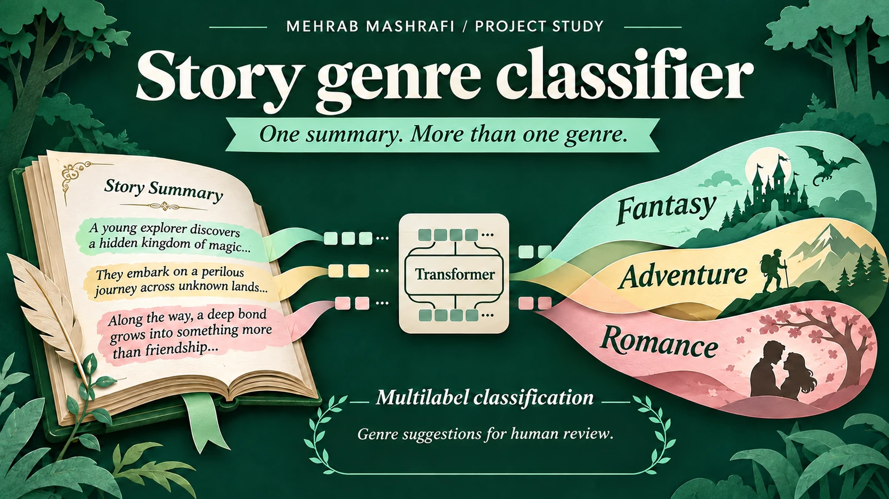

Story genre classifier · Natural language processing
Teaching a model to read between genres
A story can be fantasy, adventure and romance at once. I built a text classification experiment that reads a story summary and suggests several genre labels, rather than forcing it into one category.

- My role
- My contribution: data collection, text preparation, transformer training and inference
- Tools and scope
- Royal Road summaries · BERT · Hugging Face Transformers · Fastai
- Context
- Personal research and portfolio project
01 / The situation
One story, more than one category
I wanted to explore how machine learning could organise the overlapping genres of web fiction. A single label loses information when a story combines several kinds of narrative. Royal Road offered story summaries paired with genre labels, making this a multi label classification problem.
The task was to learn from those summaries and return a set of possible genres for new text. The model would make suggestions that a reader or editor could review.
02 / My role
Build the dataset and the model
I collected story summaries and their associated genres with a Selenium scraper. I prepared the text and labels for training, then used the bert-base-uncased transformer with Hugging Face Transformers and Fastai.
I worked through preprocessing, model configuration, training and evaluation in notebooks. I also developed an inference workflow and explored ONNX conversion so the trained model could be used beyond the training notebook.
From story summary to genre suggestions
- 01
Story summaries + labels
- 02
Text and label preparation
- 03
BERT training
- 04
Evaluation by genre
- 05
Multiple genre suggestions
A multi label workflow preserves the possibility that more than one category fits the same story.
03 / The design decision
Evaluate more than a headline accuracy
A model can look convincing overall while missing less common genres. I evaluated the experiment with micro and macro F1 and ROC AUC alongside the multi label accuracy measure. Those views help distinguish overall behaviour from performance across individual labels.
I also collected cover images and extracted dominant colours with K-means as a separate exploration. Those colours were not inputs to the genre model, and a model that predicts cover colours remained a future idea.
04 / The outcome
A repeatable route from summary to suggestions
The result is a documented pipeline from collecting labelled story descriptions to training a transformer and running predictions. I built demonstration interfaces for trying the classifier with new text.
The model learns the conventions in its training data. Its suggestions still need editorial judgment, and using it with another catalogue, language or genre taxonomy would require a fresh evaluation.
Watch the project
Watch the story genre classifier walkthrough
I explain the collection, model and demonstration workflow. Watch on YouTube ↗
Explore the implementation
Open the work
Colab may ask you to sign in to run a notebook.
Have a dataset that needs a clearer path to use?
Tell me what you want to compare or predict, where the records come from and who will use the result.
Discuss your project Email meProject by Mehrab Mashrafi. Updated .